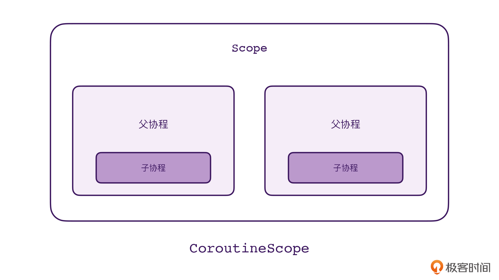
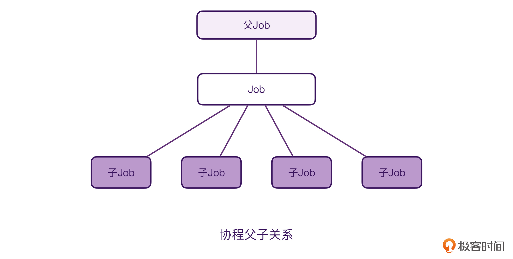
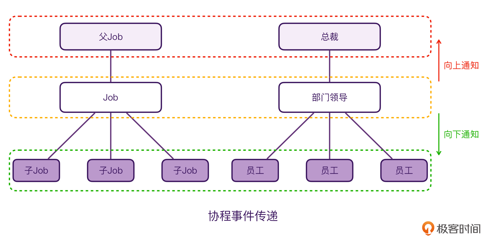
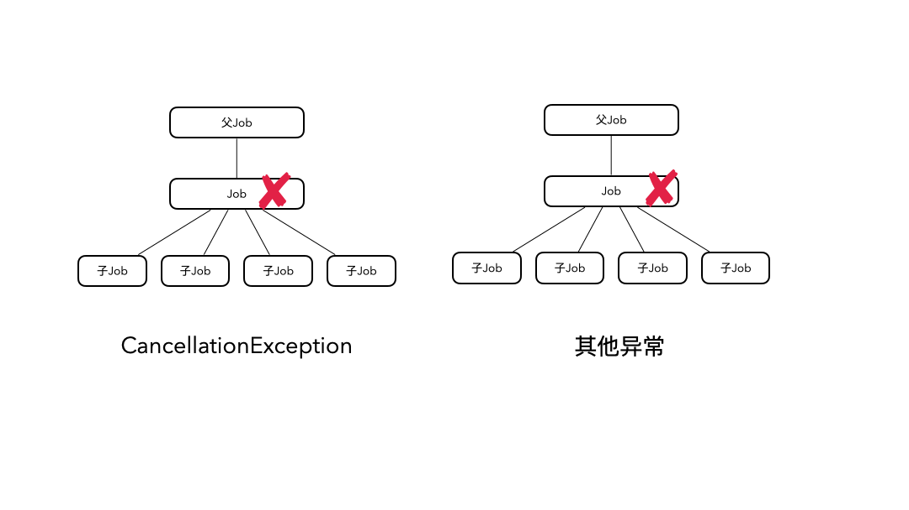

AudioCoroutineScope是如何管理协程的？
你好，我是朱涛。
通过前面课程的学习，我们知道 CoroutineScope 是实现协程结构化并发的关键。使用 CoroutineScope，我们可以批量管理同一个作用域下面所有的协程。那么，今天这节课，我们就来研究一下 CoroutineScope 是如何管理协程的。
CoroutineScope VS 结构化并发
在前面的课程中，我们学习过 CoroutineScope 的用法。由于 launch、async 被定义成了 CoroutineScope 的扩展函数，这就意味着：在调用 launch 之前，我们必须先获取 CoroutineScope。
// 代码段1
public fun CoroutineScope.launch(
context: CoroutineContext = EmptyCoroutineContext,
start: CoroutineStart = CoroutineStart.DEFAULT,
block: suspend CoroutineScope.() -> Unit
): Job {}
public fun <T> CoroutineScope.async(
context: CoroutineContext = EmptyCoroutineContext,
start: CoroutineStart = CoroutineStart.DEFAULT,
block: suspend CoroutineScope.() -> T
): Deferred<T> {}
private fun testScope() {
val scope = CoroutineScope(Job())
scope.launch{
// 省略
}
}不过，很多初学者可能不知道，协程早期的 API 并不是这么设计的，最初的 launch、async 只是普通的顶层函数，我们不需要 scope 就可以直接创建协程，就像这样：
// 代码段2
private fun testScope() {
// 早期协程API的写法
launch{
// 省略
}
}很明显，代码段 2 的写法要比代码段 1 的简单很多，那么 Kotlin 官方为什么要舍近求远，专门设计一个更加复杂的 API 呢？这一切，都是因为结构化并发。
让我们来看一段代码：
// 代码段3
private fun testScope() {
val scope = CoroutineScope(Job())
scope.launch{
launch {
delay(1000000L)
logX("Inner")
}
logX("Hello!")
delay(1000000L)
logX("World!") // 不会执行
}
scope.launch{
launch {
delay(1000000L)
logX("Inner！！！")
}
logX("Hello！！!")
delay(1000000L)
logX("World1!！！") // 不会执行
}
Thread.sleep(500L)
scope.cancel()
}上面这段代码很简单，我们使用 scope 创建了两个顶层的协程，接着，在协程的内部我们使用 launch 又创建了一个子协程。最后，我们在协程的外部等待了 500 毫秒，并且调用了 scope.cancel()。这样一来，我们前面创建的 4 个协程就全部都取消了。

通过前面第 17 讲的学习，我们知道上面的代码其实可以用这样的关系图来表示。父协程是属于 Scope 的，子协程是属于父协程的，因此，只要调用了 scope.cancel()，这 4 个协程都会被取消。
想象一下，如果我们将上面的代码用协程最初的 API 改写的话，这一切就完全不一样了：
// 代码段4
// 使用协程最初的API，只是伪代码
private fun testScopeJob() {
val job = Job()
launch(job){
launch {
delay(1000000L)
logX("Inner")
}
logX("Hello!")
delay(1000000L)
logX("World!") // 不会执行
}
launch(job){
launch {
delay(1000000L)
logX("Inner！！！")
}
logX("Hello！！!")
delay(1000000L)
logX("World1!！！") // 不会执行
}
Thread.sleep(500L)
job.cancel()
}在上面的代码中，为了实现结构化并发，我们不得不创建一个 Job 对象，然后将其传入 launch 当中作为参数。
你能感受到其中的差别吗？如果使用原始的协程 API，结构化并发是需要开发者自觉往 launch 当中传 job 参数才能实现，它是可选的，开发者也可能疏忽大意，忘记传参数。而 launch 成为 CoroutineScope 的扩展函数以后，这一切就成为必须的了，我们开发者不可能忘记。
而且，通过对比代码段 3 和 4 以后，我们也可以发现：CoroutineScope 管理协程的能力，其实也是源自于 Job。
那么，CoroutineScope 与 Job 到底是如何实现结构化并发的呢？接下来，让我们从源码中寻找答案吧！
父子关系在哪里建立的？
在分析源码之前，我们先来写一个简单的 Demo。接下来，我们就以这个 Demo 为例，来研究一下 CoroutineScope 是如何通过 Job 来管理协程的。
// 代码段5
private fun testScope() {
// 1
val scope = CoroutineScope(Job())
scope.launch{
launch {
delay(1000000L)
logX("Inner") // 不会执行
}
logX("Hello!")
delay(1000000L)
logX("World!") // 不会执行
}
Thread.sleep(500L)
// 2
scope.cancel()
}
public interface CoroutineScope {
public val coroutineContext: CoroutineContext
}
public interface Job : CoroutineContext.Element {}以上代码的逻辑很简单，我们先来看看注释 1 对应的地方。我们都知道，CoroutineScope 是一个接口，那么我们为什么可以调用它的构造函数，来创建 CoroutineScope 对象呢？不应该使用 object 关键字创建匿名内部类吗？
其实，代码段 5 当中调用 CoroutineScope() 并不是构造函数，而是一个顶层函数：
// 代码段6
// 顶层函数
public fun CoroutineScope(context: CoroutineContext): CoroutineScope =
// 1
ContextScope(if (context[Job] != null) context else context + Job())
// 顶层函数
public fun Job(parent: Job? = null): CompletableJob = JobImpl(parent)在第 1 讲当中，我曾提到过，Kotlin 当中的函数名称，在大部分情况下都是遵循“驼峰命名法”的，而在一些特殊情况下则不遵循这种命名法。上面的顶层函数 CoroutineScope()，其实就属于特殊的情况，因为它虽然是一个普通的顶层函数，但它发挥的作用却是“构造函数”。类似的用法，还有 Job() 这个顶层函数。
因此，在 Kotlin 当中，当顶层函数作为构造函数使用的时候，它的首字母是要大写的。
让我们回到代码段 6，看看其中注释 1 的地方。这行代码的意思是，当我们创建 CoroutineScope 的时候，如果传入的 Context 是包含 Job 的，那就直接用；如果是不包含 Job 的，就会创建一个新的 Job。这就意味着，每一个 CoroutineScope 对象，它的 Context 当中必定存在一个 Job 对象。而代码段 5 当中的 CoroutineScope(Job())，改成 CoroutineScope() 也是完全没问题的。
接下来，我们再来看看 launch 的源代码：
// 代码段7
public fun CoroutineScope.launch(
context: CoroutineContext = EmptyCoroutineContext,
start: CoroutineStart = CoroutineStart.DEFAULT,
block: suspend CoroutineScope.() -> Unit
): Job {
// 1
val newContext = newCoroutineContext(context)
// 2
val coroutine = if (start.isLazy)
LazyStandaloneCoroutine(newContext, block) else
StandaloneCoroutine(newContext, active = true)
// 3
coroutine.start(start, coroutine, block)
return coroutine
}在前面两节课里，我们已经分析过注释 1 和注释 3 当中的逻辑了，这节课呢，我们来分析注释 2 处的逻辑。
// 代码段8
private open class StandaloneCoroutine(
parentContext: CoroutineContext,
active: Boolean
) : AbstractCoroutine<Unit>(parentContext, initParentJob = true, active = active) {
override fun handleJobException(exception: Throwable): Boolean {
handleCoroutineException(context, exception)
return true
}
}
private class LazyStandaloneCoroutine(
parentContext: CoroutineContext,
block: suspend CoroutineScope.() -> Unit
) : StandaloneCoroutine(parentContext, active = false) {
private val continuation = block.createCoroutineUnintercepted(this, this)
override fun onStart() {
continuation.startCoroutineCancellable(this)
}
}可以看到，StandaloneCoroutine 是 AbstractCoroutine 的子类，而在第 28 讲当中，我们就已经遇到过 AbstractCoroutine，它其实就是代表了协程的抽象类。另外这里有一个 initParentJob 参数，它是 true，代表了协程创建了以后，需要初始化协程的父子关系。而 LazyStandaloneCoroutine 则是 StandaloneCoroutine 的子类，它的 active 参数是 false，代表了以懒加载的方式创建协程。
接下来，我们就看看它们的父类 AbstractCoroutine：
// 代码段9
public abstract class AbstractCoroutine<in T>(
parentContext: CoroutineContext,
initParentJob: Boolean,
active: Boolean
) : JobSupport(active), Job, Continuation<T>, CoroutineScope {
init {
if (initParentJob) initParentJob(parentContext[Job])
}
}可以看到，AbstractCoroutine 其实是 JobSupport 的子类，在它的 init{} 代码块当中，会根据 initParentJob 参数，判断是否需要初始化协程的父子关系。这个参数我们在代码段 8 当中已经分析过了，它一定是 true，所以这里的 initParentJob() 方法一定会执行，而它的参数 parentContext[Job]取出来的 Job，其实就是我们在 Scope 当中的 Job。
另外，这里的 initParentJob() 方法，是它的父类 JobSupport 当中的方法，我们来看看：
// 代码段10
public open class JobSupport constructor(active: Boolean) : Job, ChildJob, ParentJob, SelectClause0 {
final override val key: CoroutineContext.Key<*> get() = Job
protected fun initParentJob(parent: Job?) {
assert { parentHandle == null }
// 1
if (parent == null) {
parentHandle = NonDisposableHandle
return
}
// 2
parent.start()
@Suppress("DEPRECATION")
// 3
val handle = parent.attachChild(this)
parentHandle = handle
if (isCompleted) {
handle.dispose()
parentHandle = NonDisposableHandle
}
}
}
// Job源码
public interface Job : CoroutineContext.Element {
public val children: Sequence<Job>
public fun attachChild(child: ChildJob): ChildHandle
}上面的代码一共有三个地方需要注意，我们来分析一下：
注释 1，判断传入的 parent 是否为空，如果 parent 为空，说明当前的协程不存在父 Job，这时候就谈不上创建协程父子关系了。不过，如果按照代码段 5 的逻辑来分析的话，此处的 parent 则是 scope 当中的 Job，因此，代码会继续执行到注释 2。
注释 2，这里是确保 parent 对应的 Job 启动了。
所以，我们可以将协程的结构当作一颗 N 叉树。每一个协程，都对应着一个 Job 的对象，而每一个 Job 可以有一个父 Job，也可以有多个子 Job。

这样，当我们知道协程的父子关系是如何建立的了以后，父协程如何取消子协程也就很容易理解了。
协程是如何“结构化取消”的？
其实，协程的结构化取消，本质上是事件的传递，它跟我们平时生活中的场景都是类似的：

就比如，当我们在学校、公司内部，有消息或任务需要传递的时候，总是遵循这样的规则：处理好分内的事情，剩下的部分交给上级和下级。协程的结构化取消，也是通过这样的事件消息模型来实现的。
甚至，如果让我们来实现协程 API 的话，都能想象到它的代码该怎么写：
// 代码段11
fun Job.cancelJob() {
// 通知子Job
children.forEach {
cancelJob()
}
// 通知父Job
notifyParentCancel()
}当然，以上只是简化后的伪代码，真实的协程代码一定比这个复杂很多，但只要你能理解这一点，我们后面的分析就很简单了。让我们接着代码段 5 当中的注释 2，继续分析 scope.cancel() 后续的流程。
// 代码段12
public fun CoroutineScope.cancel(cause: CancellationException? = null) {
val job = coroutineContext[Job] ?: error("Scope cannot be cancelled because it does not have a job: $this")
job.cancel(cause)
}可以看到，CoroutineScope 的 cancel() 方法，本质上是调用了它当中的 Job.cancel()。而这个方法的具体实现在 JobSupport 当中：
// 代码段13
public override fun cancel(cause: CancellationException?) {
cancelInternal(cause ?: defaultCancellationException())
}
public open fun cancelInternal(cause: Throwable) {
cancelImpl(cause)
}
internal fun cancelImpl(cause: Any?): Boolean {
var finalState: Any? = COMPLETING_ALREADY
if (onCancelComplete) {
// 1
finalState = cancelMakeCompleting(cause)
if (finalState === COMPLETING_WAITING_CHILDREN) return true
}
if (finalState === COMPLETING_ALREADY) {
// 2
finalState = makeCancelling(cause)
}
return when {
finalState === COMPLETING_ALREADY -> true
finalState === COMPLETING_WAITING_CHILDREN -> true
finalState === TOO_LATE_TO_CANCEL -> false
else -> {
afterCompletion(finalState)
true
}
}
}可见，job.cancel() 最终会调用 JobSupport 的 cancelImpl() 方法。其中有两个注释，代表了两个分支，它的判断依据是 onCancelComplete 这个 Boolean 类型的成员属性。这个其实就代表了当前的 Job，是否有协程体需要执行。
另外，由于 CoroutineScope 当中的 Job 是我们手动创建的，并不需要执行任何协程代码，所以，它会是 true。也就是说，这里会执行注释 1 对应的代码。
让我们继续分析 cancelMakeCompleting() 方法：
// 代码段14
private fun cancelMakeCompleting(cause: Any?): Any? {
loopOnState { state ->
// 省略部分
val finalState = tryMakeCompleting(state, proposedUpdate)
if (finalState !== COMPLETING_RETRY) return finalState
}
}
private fun tryMakeCompleting(state: Any?, proposedUpdate: Any?): Any? {
if (state !is Incomplete)
return COMPLETING_ALREADY
// 省略部分
return COMPLETING_RETRY
}
return tryMakeCompletingSlowPath(state, proposedUpdate)
}
private fun tryMakeCompletingSlowPath(state: Incomplete, proposedUpdate: Any?): Any? {
// 省略部分
notifyRootCause?.let { notifyCancelling(list, it) }
return finalizeFinishingState(finishing, proposedUpdate)
}从上面的代码中，我们可以看到 cancelMakeCompleting() 会调用 tryMakeCompleting() 方法，最终则会调用 tryMakeCompletingSlowPath() 当中的 notifyCancelling() 方法。所以，它才是最关键的代码。
// 代码段15
private fun notifyCancelling(list: NodeList, cause: Throwable) {
onCancelling(cause)
// 1，通知子Job
notifyHandlers<JobCancellingNode>(list, cause)
// 2，通知父Job
cancelParent(cause)
}可以看到，上面代码段 15 和我们前面写的代码段 11 当中的伪代码的逻辑是一致的。我们再分别来看看它们具体的逻辑：
// 代码段16
private inline fun <reified T: JobNode> notifyHandlers(list: NodeList, cause: Throwable?) {
var exception: Throwable? = null
list.forEach<T> { node ->
try {
node.invoke(cause)
} catch (ex: Throwable) {
exception?.apply { addSuppressedThrowable(ex) } ?: run {
exception = CompletionHandlerException("Exception in completion handler $node for $this", ex)
}
}
}
exception?.let { handleOnCompletionException(it) }
}代码段 16 当中的逻辑，就是遍历当前 Job 的子 Job，并将取消的 cause 传递过去，这里的 invoke() 最终会调用 ChildHandleNode 的 invoke() 方法：
internal class ChildHandleNode(
@JvmField val childJob: ChildJob
) : JobCancellingNode(), ChildHandle {
override val parent: Job get() = job
override fun invoke(cause: Throwable?) = childJob.parentCancelled(job)
override fun childCancelled(cause: Throwable): Boolean = job.childCancelled(cause)
}
public final override fun parentCancelled(parentJob: ParentJob) {
cancelImpl(parentJob)
}然后，从以上代码中我们可以看到，ChildHandleNode 的 invoke() 方法会调用 parentCancelled() 方法，而它最终会调用 cancelImpl() 方法。其实，这个就是代码段 13 当中的 cancelImpl() 方法，也就是 Job 取消的入口函数。这实际上就相当于在做递归调用。
接下来，我们看看代码段 15 当中的注释 2，通知父 Job 的流程：
private fun cancelParent(cause: Throwable): Boolean {
if (isScopedCoroutine) return true
val isCancellation = cause is CancellationException
val parent = parentHandle
if (parent === null || parent === NonDisposableHandle) {
return isCancellation
}
// 1
return parent.childCancelled(cause) || isCancellation
}请留意上面代码段的注释 1，这个函数的返回值是有意义的，返回 true 代表父协程处理了异常，而返回 false，代表父协程没有处理异常。这种类似责任链的设计模式，在很多领域都有应用，比如 Android 的事件分发机制、OkHttp 的拦截器，等等。
public open fun childCancelled(cause: Throwable): Boolean {
if (cause is CancellationException) return true
return cancelImpl(cause) && handlesException
}那么，当异常是 CancellationException 的时候，协程是会进行特殊处理的。一般来说，父协程会忽略子协程的取消异常，这一点我们在第 23 讲当中也提到过。而如果是其他的异常，那么父协程就会响应子协程的取消了。这个时候，我们的代码又会继续递归调用代码段 13 当中的 cancelImpl() 方法了。
至此，协程的“结构化取消”部分的逻辑，我们也分析完了。让我们通过视频来看看它们整体的执行流程。
00:23 / 01:11
1.0x
- 2.0x
- 1.5x
- 1.25x
- 1.0x
- 0.5x
音量
网页全屏
全屏
00:00
小结
今天的内容到这里就结束了，我们来总结和回顾一下这节课里涉及到的知识点：
每次创建 CoroutineScope 的时候，它的内部会确保 CoroutineContext 当中一定存在 Job 元素，而 CoroutineScope 就是通过这个 Job 对象来管理协程的。
在我们通过 launch、async 创建协程的时候，会同时创建 AbstractCoroutine 的子类，在它的 initParentJob() 方法当中，会建立协程的父子关系。每个协程都会对应一个 Job，而每个 Job 都会有一个父 Job，多个子 Job。最终它们会形成一个 N 叉树的结构。
由于协程是一个 N 叉树的结构，因此协程的取消事件以及异常传播，也会按照这个结构进行传递。每个 Job 取消的时候，都会通知自己的子 Job 和父 Job，最终以递归的形式传递给每一个协程。另外，协程在向上取消父 Job 的时候，还利用了责任链模式，确保取消事件可以一步步传播到最顶层的协程。这里还有一个细节就是，默认情况下，父协程都会忽略子协程的 CancellationException。
到这里，我们其实就可以进一步总结出协程的结构化取消的规律了。
对于 CancellationException 引起的取消，它只会向下传播，取消子协程；对于其他的异常引起的取消，它既向上传播，也向下传播，最终会导致所有协程都被取消。

思考题
在第 23 讲当中，我们学习过 SupervisorJob，它可以起到隔离异常传播的作用，下面是它的源代码，请问你能借助这节课学的知识点来分析下它的原理吗？
public fun SupervisorJob(parent: Job? = null) : CompletableJob =
SupervisorJobImpl(parent)
private class SupervisorJobImpl(parent: Job?) : JobImpl(parent) {
override fun childCancelled(cause: Throwable): Boolean = false
}
COMMUNITY NOTES
读者评论
这篇文章暂时没有读者留言。